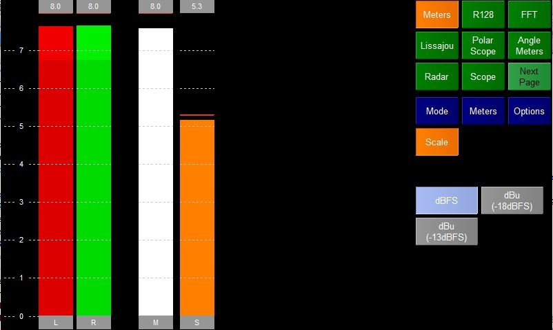

The Meters plugins shows a selection of basic audio meters.
In full screen mode the plugin shows the meters on the left and some information about the session being monitored on the right.
If stereo is being monitored then the meters shown are
In multichannel mode a meter is shown for each channel.
There are four possible meter modes which can be selected by pressing the Mode Option Selection button.

PPM
Shows a digital Peak Program Meter. The ballistics and algorithm are taken from BBC R&D baptools code. The scale is from 0-7
Sample Peak
Shows the highest sample value for each chunk of incoming audio. The scale is in selectable from the Scale Option page.
Energy
Shows the Root Meam Square energy of each chunk of incoming audio. The scale is in selectable from the Scale Option page.
LKFS
Shows the Loudness of incoming audio integrated over 8-16 seconds. This is taken from the BBC R&D baptools code.

The Meters Options let you

Allows the user to change how the Peak lines are displayed
The user can also Clear the meter which resets the peaks etc
Freeze the Meter which as it says will freeze the display.

When in Sample Peak or Energy mode the user can change the scale